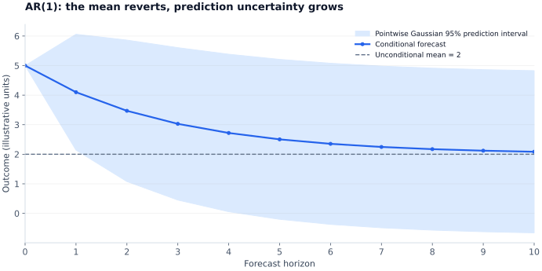

ARMA dynamics and forecasting
ARMA models summarize how past observations and past innovations predict the current value. Their main practical value comes from understanding persistence, forecast uncertainty, and out-of-sample behavior.
AR and MA describe different kinds of memory
Use the convention that moving-average coefficients enter with a plus sign. With $\varepsilon_t$ a zero-mean innovation of variance $\sigma^2$,
An AR term carries memory through previous observations; an MA term carries memory through recent innovations. A finite MA of finite-variance white noise is covariance-stationary. Its invertibility is a separate condition that permits recovering innovations from the observed history.
For a causal stationary AR(1), $y_t=c+\phi y_{t-1}+\varepsilon_t$, $|\phi|<1$, the mean is $\mu=c/(1-\phi)$, the variance is $\sigma^2/(1-\phi^2)$, and $\rho(k)=\phi^k$. Recursive substitution yields
For an MA(1), $y_t=\mu+\varepsilon_t+\theta\varepsilon_{t-1}$, the variance is $\sigma^2(1+\theta^2)$ and lag-one correlation is $\theta/(1+\theta^2)$; correlations at larger lags vanish. If $\theta=0.5$, lag-one correlation is 0.4.
Root conventions: outside versus inside
Define the lag operator by $Ly_t=y_{t-1}$ and write $\phi(L)y_t=c+\theta(L)\varepsilon_t$, with $\phi(z)=1-\phi_1z-\cdots-\phi_pz^p$ and $\theta(z)=1+\theta_1z+\cdots+\theta_qz^q$.
For the usual causal stationary ARMA representation, AR polynomial roots lie outside the unit circle; an invertible MA representation has MA polynomial roots outside it too, after handling any common factors. In a difference-equation trial solution $y_t=\lambda^t$, the companion eigenvalues instead lie inside the unit circle. The two are reciprocal conventions: $z=1/\lambda$.
For $y_t=y_{t-1}-0.5y_{t-2}+\varepsilon_t$, the characteristic eigenvalues are $(1\pm i)/2$, with modulus $1/\sqrt2$. The lag roots are $1\pm i$, with modulus $\sqrt2$. Both descriptions imply stable, damped oscillations. Centering removes the intercept; it does not remove the forcing innovations.
Wold's decomposition gives an infinite linear innovation representation for a purely nondeterministic covariance-stationary process. It does not say every stationary process is exactly a finite-order ARMA, nor that a best linear forecast always equals the full nonlinear conditional expectation.
Identify, estimate, and check
| Ideal population pattern | ACF | PACF |
|---|---|---|
| AR($p$) | Generally tails off | Cuts off after $p$ |
| MA($q$) | Cuts off after $q$ | Generally tails off |
| ARMA | Generally tails off | Generally tails off |
Sample patterns are noisy, and mixed or nearly canceling dynamics can blur these rules. Stable AR models can be estimated by OLS with appropriate innovation assumptions; MA and ARMA models usually use conditional or exact likelihood methods. Lagged outcomes generally rule out finite-sample strict exogeneity, so consistency is an asymptotic claim rather than exact OLS unbiasedness.
Compare $AIC=-2\hat\ell+2k$ and $BIC=-2\hat\ell+k\log T$ on a common response and comparable likelihood sample; count all estimated likelihood parameters consistently. These criteria help choose lag orders after considering transformations. Do not compare raw fit statistics across unrelated outcomes or let a high $R^2$ determine integration order.
Inspect residual autocorrelation. A Ljung-Box statistic at maximum lag $m$ is $Q=T(T+2)\sum_{k=1}^m\hat\rho_k^2/(T-k)$. Fitted ARMA residual tests often adjust the reference degrees of freedom for estimated dynamics. Approximation quality and conditional heteroskedasticity matter; lack of linear residual correlation does not establish independent errors.
Forecast recursively and quantify uncertainty
Under the innovation conditional-mean restrictions, replace future innovations by zero and future lagged observations by earlier forecasts. For an AR(1),
The variance formula assumes known parameters and a homoskedastic innovation process. Gaussian innovations give Gaussian prediction intervals; otherwise, simulation or a suitable distributional model may be needed. Estimated-parameter and model-selection uncertainty are additional sources of error.
With illustrative $\mu=2$, $\phi=0.7$, $\sigma=1$, and $y_t=5$, the first three forecasts are 4.10, 3.47, and 3.029. Forecast-error variances are 1, 1.49, and 1.7301. The forecast converges to 2 while variance approaches $1/(1-0.7^2)\approx1.961$.

Evaluate using the information available at the time
Reserve future observations for evaluation and use rolling or expanding forecast origins. Refit parameters and any scaling or transformation inside each training window. Randomly splitting dependent time observations can leak future information and produce an unrealistic estimate of forecasting performance.
Compare against a relevant benchmark, such as a random walk for levels or a historical mean for returns. Report the horizon and loss: $MAE=H^{-1}\sum_h|e_h|$ and $RMSE=\sqrt{H^{-1}\sum_he_h^2}$. In an ARIMA($p,d,q$), the ARMA equation applies to the differenced series; reconstruct level forecasts and their uncertainty with the integration step included.
Study sources and further reading
Study basis: personal Time Series notes, PDF pp. 3–9; Mehdi Hosseinkouchack, Econometrics, Section 3; Andrea Ugolini, Advanced Econometrics, Lectures 02–04. Complementary discussion appears in Hyndman and Athanasopoulos, Forecasting: Principles and Practice, ARIMA models.
The explanations and numerical examples here are a rewritten study synthesis. Examples use illustrative inputs unless stated otherwise; the original study PDFs are not redistributed.